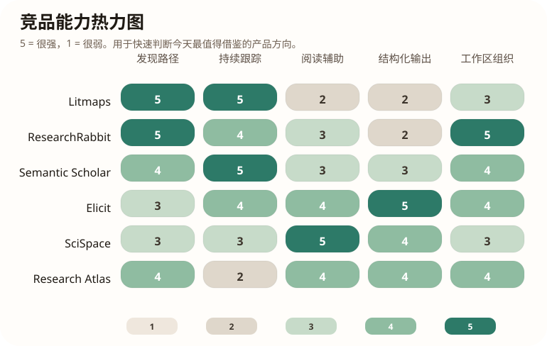

Daily Product Brief
Research Atlas 产品迭代日报 - 2026-04-13
今天的核心判断：市面上成熟产品几乎都在把“一次性检索”升级成“持续研究流”，重点不是多给结果，而是更快找到下一篇该看的论文。
竞品扫描
结构化日报
小步迭代
竞品能力热力图

这份 HTML 可直接在浏览器里另存为 PDF。
竞品信号
- Litmaps 把文献发现做成 citation network 驱动的动态地图，强调“快速找到关键论文”和“自动跟踪最新研究”。
- ResearchRabbit 更强调 collections、可视化探索和智能提醒，适合持续跟踪一个主题而不是一次性搜索。
- Semantic Scholar 的优势是高质量 metadata、引用网络和研究 feed，用户能快速判断一篇论文是否值得点开。
- Elicit 更像结构化研究工作台，擅长把文献整理成对比表和问题导向的研究摘要。
- SciSpace 的优势在于把“读论文”本身做成可交互过程，比如问答、术语解释和针对 PDF 的辅助理解。
我们该吸收什么
- 把检索结果进一步产品化成“主题视图 + 信号视图 + 后续关注”而不只是结果列表。
- 为主题或标签增加持续跟踪机制，把一次性搜索升级成持续研究流。
- 在详情页加入更强的阅读辅助，比如术语释义、为什么看这篇、与相邻论文的对比入口。
今天已经做了什么
- 首页和检索页升级为 Research Atlas 风格的主题化界面，加入主题分组、彩色中文标签和轻量动效。
- 总结 schema 升级为更读者导向的结构：问题、核心思路、方法、实验、结果、价值和一句话判断。
- 新增产品迭代 harness 文档与报告模板，为后续每日自动迭代提供固定合同。
下一步最值得做
- 为主题标签增加“持续跟踪/订阅”能力，并把每日新论文变化压缩成一屏简报。
回归结果
- python3 -m unittest discover -s tests -p 'test_*.py' passed
- python3 -m compileall backend frontend tests passed
- local smoke check on http://127.0.0.1:8766/ passed